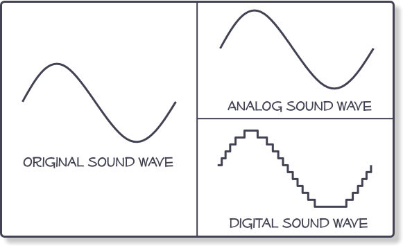

Det grunnleggende: om hvordan digital lyd tas opp
Naturlig lyd varierer hele tiden, og derfor er alltid digitale opptak en omtrentlig versjon av hele den naturlig lydskalaen. Fremskritt innen opptaksteknologi utvider imidlertid skalaen og nøyaktigheten konstant når det gjelder hva som kan tas opp digitalt.
Når et digitalt opptak utføres fra en analog kilde – for eksempel en live-konsert eller musikere i et opptaksstudio – samples lyden i regelmessige intervaller. Lydsvingningene lagres som et tall, noe som skaper et digitalt opptak av den analoge lydkilden som en serie med diskrete tall.
Hvor mye av den opprinnelige analoge lyden som lagres under det digitale opptaket, avhenger hovedsaklig av samplingsfrekvensen og bitdybden (hvor mange samplinger som lagres hvert sekund, og hvor mye informasjon hver sampling inneholder).
Naturlig lyd varierer hele tiden, og derfor er alltid digitale opptak en omtrentlig versjon av hele den naturlig lydskalaen. Fremskritt innen opptaksteknologi utvider imidlertid skalaen og nøyaktigheten konstant når det gjelder hva som kan tas opp digitalt.
Når et digitalt opptak utføres fra en analog kilde – for eksempel en live-konsert eller musikere i et opptaksstudio – samples lyden i regelmessige intervaller. Lydsvingningene lagres som et tall, noe som skaper et digitalt opptak av den analoge lydkilden som en serie med diskrete tall.
Hvor mye av den opprinnelige analoge lyden som lagres under det digitale opptaket, avhenger hovedsaklig av samplingsfrekvensen og bitdybden (hvor mange samplinger som lagres hvert sekund, og hvor mye informasjon hver sampling inneholder).
Lagre digital lyd
Når et digitalt opptak utføres, kan det lagres i en rekke forskjellige formater. Hvert format har en ulik måte å balansere lydkvaliteten på når størrelsen på den digitale lydfilen opprettes: opptak med svært høy kvalitet har for eksempel ikke vært mulig med små musikkspillere historisk sett.
Men etter hvert som digitale opptak blir enklere og mer tilgjengelig med bærbare enheter som har lagringskapasitet på mange gigabyte, blir digital lyd med svært høy kvalitet en praktisk realitet for millioner av brukere.
Når et digitalt opptak utføres, kan det lagres i en rekke forskjellige formater. Hvert format har en ulik måte å balansere lydkvaliteten på når størrelsen på den digitale lydfilen opprettes: opptak med svært høy kvalitet har for eksempel ikke vært mulig med små musikkspillere historisk sett.
Men etter hvert som digitale opptak blir enklere og mer tilgjengelig med bærbare enheter som har lagringskapasitet på mange gigabyte, blir digital lyd med svært høy kvalitet en praktisk realitet for millioner av brukere.